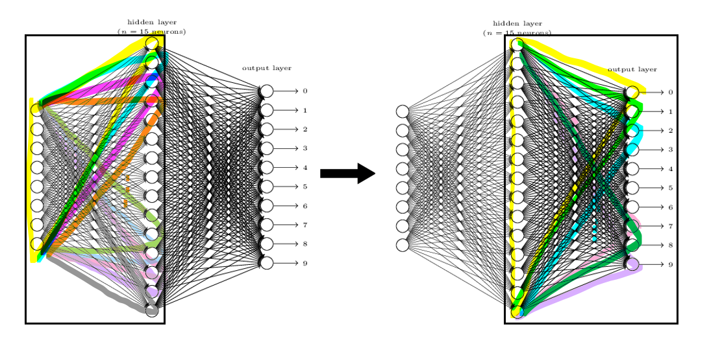
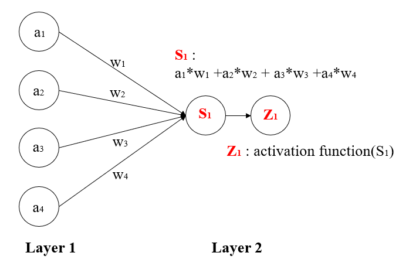

Forward propagation

Forward propagation is inferring the value using a model created based on input values and answer.
Each node in the neral network is called perceptron.
Input perceptrons affect perceptrons in the next layer, and this perceptrons in the next layer affects perceptrons in its next layer.

Each perceptrons in the input layer are used to make perceptron in the next layer. The values of each perceptron are multiplied by weights and is summed up to make perceptrons in the next layer.
The result of summation then becomes the input of activation function such as sigmoid, ReLu.
Creating the right model for the problem is largely related to finding right weights. Input values are given, therefore by changing weights, proper model can be made.
Then, How can we find proper weights? It can be done by evaluating errors of current model, and changing its weights based on errors. This part is for back propagation.
However, We cannot find proper weights at one go. So usually, Initial weights are random number between -1 to 1.
Then, infer the value and based on the errors it can modify its weight.
How do know how much errors we have in this model?
If we simply add the errors?
0.2+0.1+0.2+(-0.9)+(0.05)+0.25+0+0.05+0.05+0 = 0.5 +(-0.9) +0.3 =
-0.01
the errors is only -0.01. It is becuase some nodes have different sign, so they cancel out each other's errors.
To avoid this, Squaring each errors and then add.
0.2
2+0.1
2+0.2
2+(-0.9)
2+(0.05)
2+0.25
2+0
2+0.05
2+0.05
2+0
2=
1.01
The evaluation function we will use here is 1/2(correct answer-estimated answer)
2
So how can we update the weight using evaluation function?